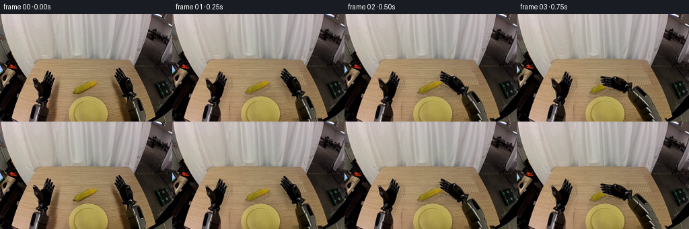
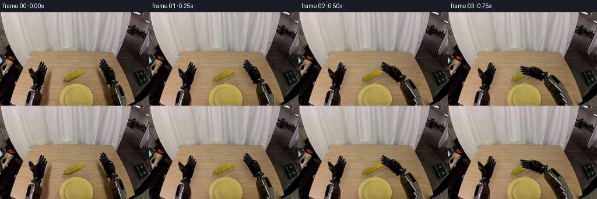
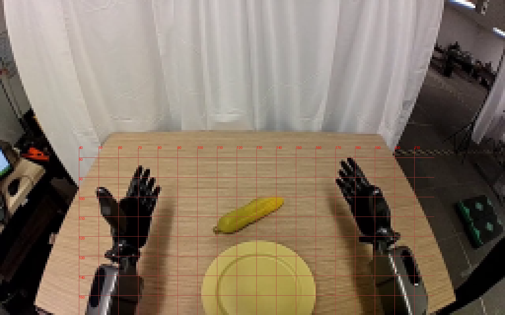
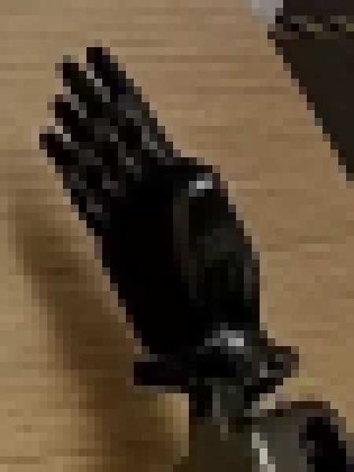
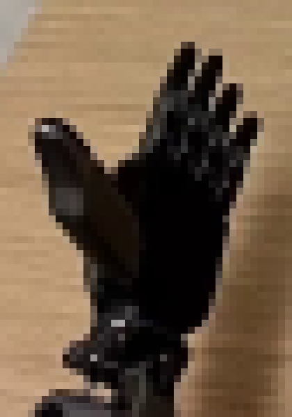
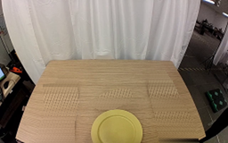
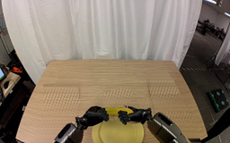
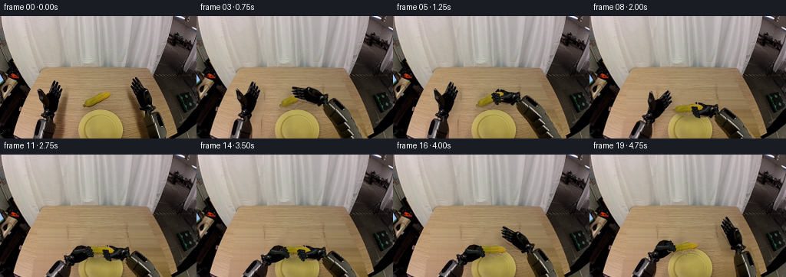
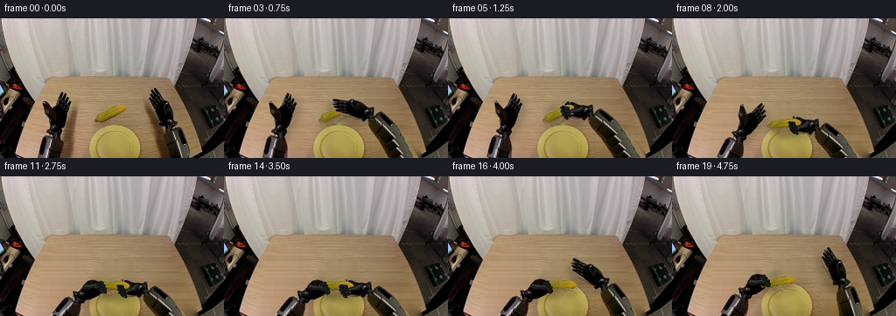
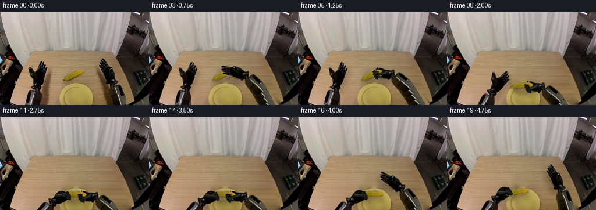

CODING AGENTS AS PIXEL WORLD MODELS
traex/GPT-6.1-Sol · common50_0040
点击播放 · 原生 RGB 像素
逐轮保存的候选
回放视频、检查图与代码变化。
每份候选均可单独播放。实际图片检查记录在下方工具轨迹中。
候选 01播放与检查图
点击播放 · 原生 RGB 像素

展开代码变化
--- 上一保存版本
+++ 本次保存版本
@@ -0,0 +1,226 @@
+from pathlib import Path
+import numpy as np
+from PIL import Image, ImageDraw, ImageFilter
+from scipy.ndimage import gaussian_filter, binary_dilation
+import artifact_io
+
+ROOT=Path(__file__).resolve().parent
+S=4
+W,H=256,160
+im=Image.open(ROOT/'first_frame.png').convert('RGB')
+a=np.asarray(im).astype(float)
+rng=np.random.default_rng(52)
+
+def mask_polygon(points, sz=(W,H), scale=S):
+ m=Image.new('L',(sz[0]*scale,sz[1]*scale))
+ ImageDraw.Draw(m).polygon([(round(x*scale),round(y*scale)) for x,y in points],fill=255)
+ return m
+
+# Source silhouettes are separated into mechanical wrist, palm and hinged digits.
+L_outline=[(49,96),(51,95),(54,98),(58,102),(61,104),(63,99),(65,94),(67,89),(68,85),(70,84),(71,87),(72,85),(74,86),(74,91),(76,90),(78,92),(77,97),(79,95),(81,97),(80,102),(78,109),(76,114),(74,120),(71,125),(71,130),(69,134),(65,136),(57,134),(56,132),(53,130),(53,128),(56,125),(57,121),(55,116),(53,111),(51,108),(50,101)]
+R_outline=[(178,80),(180,82),(183,87),(186,91),(190,94),(194,97),(197,104),(198,111),(198,115),(201,118),(204,120),(203,123),(200,124),(197,126),(192,126),(187,125),(183,123),(183,120),(180,117),(178,114),(176,110),(175,107),(173,105),(171,102),(170,97),(171,96),(170,93),(170,88),(172,88),(171,85),(173,83),(175,85),(177,87),(175,83),(176,81)]
+L_arm=[(53,133),(62,132),(68,135),(70,140),(72,147),(72,158),(70,177),(67,200),(37,200),(41,176),(44,158),(47,143),(48,138)]
+R_arm=[(190,125),(197,124),(202,125),(207,125),(211,130),(214,140),(216,151),(219,170),(223,200),(191,200),(191,174),(190,154),(187,139),(187,131)]
+
+# Reconstruct only the table pixels occluded by the initial bodies and their shadows.
+remove_polys=[[(48,94),(62,92),(67,83),(81,84),(86,96),(88,115),(83,137),(83,160),(41,160),(44,138),(49,131),(49,113)],
+[(168,79),(184,78),(194,92),(202,110),(209,122),(216,135),(223,160),(179,160),(175,139),(172,122),(166,100)],
+[(107,112),(113,105),(136,98),(145,99),(149,107),(145,113),(127,122),(111,123),(105,119)]]
+rem=np.zeros((H,W),bool)
+for p in remove_polys:
+ rem |= np.asarray(mask_polygon(p,scale=1))>0
+# Per-scanline interpolation follows the table's horizontal grain and exposure gradient.
+bg=a.copy()
+for y in range(77,H):
+ # unchanged clean wood samples on each side of every removed island
+ row=a[y]
+ for lo,hi in [(40,90),(164,224),(104,150)]:
+ if lo==104 and y>123: continue
+ region=rem[y,lo:hi]
+ if not region.any(): continue
+ inds=np.flatnonzero(region)+lo
+ left=max(lo-2,int(inds.min())-3); right=min(W-3,int(inds.max())+3)
+ # At the hands' far upper edge, avoid the curtain or distant furniture.
+ if y<94:
+ left=max(40,left); right=min(193,right)
+ # Samples in table's safe unoccluded wood.
+ if lo==40:
+ lx=max(28,int(inds.min())-4); rx=92
+ if y<97: lx=86
+ elif lo==164:
+ lx=163 if y<130 else 170; rx=min(230,int(inds.max())+5)
+ if y<105: rx=160
+ else:
+ lx=101; rx=153
+ lv=np.mean(row[max(0,lx-2):lx+3],axis=0)
+ rv=np.mean(row[max(0,rx-2):rx+3],axis=0)
+ if rx<=lx: lv=rv=(lv+rv)*.5; rx=lx+1
+ # Small grain variations copied from a bare stripe at the same depth.
+ tex_x=90 if lo==40 else (164 if y<125 else 172)
+ tex=row[tex_x-5:tex_x+5]
+ tex=tex-tex.mean(axis=0)
+ for x in inds:
+ t=np.clip((x-lx)/(rx-lx),0,1)
+ bg[y,x]=(1-t)*lv+t*rv + tex[(x*3+y)%10]*.5
+# Feather patch borders; keep the photographed plate untouched.
+rm=np.asarray(Image.fromarray((rem*255).astype('uint8')).filter(ImageFilter.GaussianBlur(1.15))).astype(float)/255
+rm=np.maximum(rm,rem.astype(float)*.97)
+bg=np.clip(a*(1-rm[...,None])+bg*rm[...,None],0,255).astype('uint8')
+background=Image.fromarray(bg).resize((W*S,H*S),Image.Resampling.LANCZOS).convert('RGBA')
+background.resize((W,H),Image.Resampling.LANCZOS).convert('RGB').save(ROOT/'.tmp/background.png')
+
+# Extend the same metallic forearm surfaces below the crop; no elastic warping.
+source=Image.new('RGB',(W,220))
+source.paste(im)
+pa=np.asarray(source).copy()
+for y in range(160,220):
+ for x in range(W):
+ pa[y,x]=a[148+(y-160)%10,x]
+source=Image.fromarray(pa).resize((W*S,220*S),Image.Resampling.LANCZOS).convert('RGBA')
+
+def sprite(points):
+ z=source.copy(); z.putalpha(mask_polygon(points,sz=(W,220)))
+ return z
+
+Larm=sprite(L_arm); Rarm=sprite(R_arm)
+# Palms include the wrist bearings and do not stretch as the hand changes pose.
+Lpalm=sprite([(59,104),(64,101),(70,101),(78,103),(78,108),(75,116),(73,122),(70,126),(71,130),(69,134),(66,136),(57,134),(55,132),(53,130),(53,128),(56,125),(57,120),(56,116),(56,109)])
+Rpalm=sprite([(174,99),(179,96),(185,94),(190,95),(193,102),(194,108),(197,113),(198,115),(201,118),(204,120),(203,123),(200,124),(197,126),(192,126),(187,125),(183,123),(183,119),(180,116),(177,111)])
+Lfingers=sprite([(61,105),(63,99),(65,94),(67,89),(68,85),(70,84),(71,87),(72,85),(74,86),(74,91),(76,90),(78,92),(77,97),(79,95),(81,97),(80,102),(78,109),(74,110),(68,109)])
+Rfingers=sprite([(178,80),(180,82),(183,87),(186,91),(189,95),(186,102),(180,108),(176,109),(173,105),(171,102),(170,97),(171,96),(170,93),(170,88),(172,88),(171,85),(173,83),(175,85),(177,87),(175,83),(176,81)])
+Lthumb=sprite([(49,96),(51,95),(54,98),(58,102),(61,107),(64,112),(63,119),(58,120),(54,114),(51,108),(50,102)])
+Rthumb=sprite([(188,95),(191,94),(194,97),(197,103),(198,111),(198,115),(195,117),(191,113),(189,108),(187,101)])
+
+# Exact yellow surface, without copying the cast shadow below the corn.
+cm=np.zeros((H,W),float)
+for y in range(98,120):
+ for x in range(106,146):
+ r,g,b=a[y,x]
+ if r>85 and g>77 and r>b*1.48 and g>b*1.45 and r<g*1.48:
+ cm[y,x]=1
+corn=Image.new('RGBA',(W*S,220*S))
+col=source.copy()
+alpha=Image.new('L',(W*S,220*S))
+alpha.paste(Image.fromarray((cm*255).astype('uint8')).resize((W*S,H*S),Image.Resampling.LANCZOS),(0,0))
+col.putalpha(alpha);corn=col
+
+
+def trans(layer, pivot, target, angle=0, scale=1):
+ th=np.deg2rad(angle); c=np.cos(th)*scale; s=np.sin(th)*scale
+ mat=np.array([[c,-s],[s,c]])
+ inv=np.linalg.inv(mat)
+ p=np.array(pivot)*S; q=np.array(target)*S
+ off=p-inv@q
+ return layer.transform((W*S,H*S),Image.Transform.AFFINE,(inv[0,0],inv[0,1],off[0],inv[1,0],inv[1,1],off[1]),resample=Image.Resampling.BICUBIC)
+
+def ease(t):
+ t=np.clip(t,0,1); return float(t*t*(3-2*t))
+
+def pose(i, keys):
+ for (n,v),(m,w) in zip(keys[:-1],keys[1:]):
+ if n<=i<=m:
+ t=ease((i-n)/(m-n)); return np.array(v)*(1-t)+np.array(w)*t
+ return np.array(keys[-1][1],float)
+
+# Digit kinematics: rigid phalanges rotate at their joints and project to the camera.
+Lchains=[[(66,105),(66.9,98),(68,91),(69,85.5)],[(69.3,106),(70.2,98.7),(72.3,91.5),(73,86)],[(73,106.5),(74.4,100),(76,94.5),(76.9,91.5)],[(76,107),(77.8,102.4),(79,98.5),(79.7,97)]]
+Rchains=[[(184,100),(182,93),(179.6,86.5),(178.5,81.1)],[(181.7,102),(178.8,95.5),(175.7,89),(173,84)],[(179.8,104.5),(176.5,98.9),(173.5,93.6),(171.5,89)],[(178.1,107),(174.9,102.6),(172.5,98.9),(171,95)]]
+
+def capsule(draw, p,q,width,color):
+ p=np.array(p)*S; q=np.array(q)*S; rr=width*S*.5
+ draw.line([tuple(p),tuple(q)],fill=color,width=round(width*S))
+ for pt in [p,q]: draw.ellipse((pt[0]-rr,pt[1]-rr,pt[0]+rr,pt[1]+rr),fill=color)
+
+def finger_layer(side, grip):
+ # Source appearance is retained at full opening, with generated articulated joints
+ # taking over progressively as the fingers turn toward the palm.
+ orig=Lfingers if side=='L' else Rfingers
+ if grip<=.001:return orig
+ lay=Image.new('RGBA',source.size)
+ dr=ImageDraw.Draw(lay)
+ chains=Lchains if side=='L' else Rchains
+ for j,chain in enumerate(chains):
+ pos=np.array(chain[0],float)
+ for k in range(3):
+ rest=np.array(chain[k+1])-np.array(chain[k])
+ flex=np.deg2rad([43,101,156][k])*grip
+ # Camera projection of rotation toward the inside of the palm.
+ lateral=np.array([.8 if side=='L' else -.7,.65])
+ step=rest*np.cos(flex)+lateral*np.sin(flex)*np.linalg.norm(rest)*.23
+ nxt=pos+step
+ width=3.4 if j<3 else 2.8
+ capsule(dr,pos,nxt,width,(15,17,16,255))
+ capsule(dr,pos+[-.42,-.12],nxt+[-.42,-.12],width*.40,(37,39,37,255))
+ capsule(dr,nxt,nxt,width*.91,(12,14,13,255))
+ # Small glints on the bearing faces.
+ p=pos+step*.70
+ capsule(dr,p+[-.55,-.22],p+[.15,-.22],.52,(67,68,63,190))
+ pos=nxt
+ t=ease(min(1,grip/.27))
+ if t<1:
+ z=orig.copy(); al=np.asarray(z.getchannel('A'));z.putalpha(Image.fromarray((al*(1-t)).astype('uint8')))
+ lay.putalpha(Image.fromarray((np.asarray(lay.getchannel('A'))*t).astype('uint8')))
+ z.alpha_composite(lay); return z
+ return lay
+
+def thumb_layer(side,grip):
+ original=Lthumb if side=='L' else Rthumb
+ if grip<.02:return original
+ # A hinged two-link thumb folds across the object; the palm stays rigid.
+ g=ease(grip)
+ if side=='L':
+ pivot=(59,116); end0=np.array([51.1,100.0]); mid0=np.array([55.2,110.0]); mid1=np.array([63,113]);end1=np.array([69,107])
+ else:
+ pivot=(194,113); end0=np.array([190.1,97.1]);mid0=np.array([193,106]);mid1=np.array([189,112]);end1=np.array([182.5,107])
+ mid=mid0*(1-g)+mid1*g;end=end0*(1-g)+end1*g
+ lay=Image.new('RGBA',source.size); dr=ImageDraw.Draw(lay)
+ capsule(dr,pivot,mid,5.6,(25,28,26,255));capsule(dr,mid,end,4.6,(29,31,29,255))
+ capsule(dr,np.array(pivot)+[-.7,-.6],mid+[-.7,-.6],1.4,(62,65,60,255))
+ capsule(dr,mid+[-.55,-.35],end+[-.55,-.35],1.1,(66,67,61,255))
+ t=ease(min(1,grip/.4))
+ if t<1:
+ z=original.copy(); al=np.asarray(z.getchannel('A'));z.putalpha(Image.fromarray((al*(1-t)).astype('uint8')))
+ lay.putalpha(Image.fromarray((np.asarray(lay.getchannel('A'))*t).astype('uint8')))
+ z.alpha_composite(lay);return z
+ return lay
+
+# Spatial trajectories have long, stable grasp/release dwells.
+Rkeys=[(0,(194,123,0,0)),(4,(162,108,-55,-31)),(6,(162,108,-55,-31)),(9,(165,130,-58,-31)),(14,(165,130,-58,-31)),(16,(178,124,-28,-18)),(19,(195,124,0,0))]
+Lkeys=[(0,(62,130,0,0)),(6,(64,130,4,3)),(10,(89,139,45,27)),(12,(90,138,48,27)),(15,(90,138,48,27)),(19,(83,134,38,20))]
+Ckeys=[(0,(126.5,109.5,0)),(6,(126.5,109.5,0)),(9,(129,125.8,26)),(15,(129,125.8,26)),(19,(122,121.8,16))]
+
+def draw_shadow(canvas,kind,center,angle,opacity,blur=2,scale=1):
+ if kind=='corn': z=corn
+ elif kind=='L': z=sprite(L_outline)
+ else:z=sprite(R_outline)
+ pivot=(126.5,109.5) if kind=='corn' else ((62,130) if kind=='L' else (194,123))
+ moved=trans(z,pivot,center,angle,scale)
+ m=moved.getchannel('A').filter(ImageFilter.GaussianBlur(blur*S))
+ m=m.point(lambda v:int(v*opacity))
+ sh=Image.new('RGBA',canvas.size,(36,28,12,0));sh.putalpha(m)
+ canvas.alpha_composite(sh)
+
+frames=[np.asarray(im,dtype=np.uint8).copy()]
+for i in range(1,20):
+ rp=pose(i,Rkeys);lp=pose(i,Lkeys);cp=pose(i,Ckeys)
+ rg=ease((i-3)/3) if i<=13 else 1-ease((i-13)/3)
+ lg=ease((i-9)/3)
+ canvas=background.copy()
+ # Soft stationary-light shadows fall behind the raised objects on the tabletop.
+ draw_shadow(canvas,'L',(lp[0]+5,lp[1]+5),lp[2],.20,3.3)
+ draw_shadow(canvas,'R',(rp[0]-5,rp[1]+6),rp[2],.21,3.4)
+ lift=ease((i-6)/3)
+ draw_shadow(canvas,'corn',(cp[0]+1.7,cp[1]+2+6*lift),cp[2],.30-.12*lift,1.0+1.3*lift)
+ for side,p,arm,palm in [('L',lp,Larm,Lpalm),('R',rp,Rarm,Rpalm)]:
+ pivot=(62,130) if side=='L' else (194,123)
+ canvas.alpha_composite(trans(arm,pivot,p[:2],p[3]))
+ canvas.alpha_composite(trans(palm,pivot,p[:2],p[2]))
+ canvas.alpha_composite(trans(corn,(126.5,109.5),cp[:2],cp[2]))
+ for side,p,g in [('R',rp,rg),('L',lp,lg)]:
+ pivot=(62,130) if side=='L' else (194,123)
+ canvas.alpha_composite(trans(finger_layer(side,g),pivot,p[:2],p[2]))
+ canvas.alpha_composite(trans(thumb_layer(side,g),pivot,p[:2],p[2]))
+ out=canvas.convert('RGB').resize((W,H),Image.Resampling.LANCZOS)
+ frames.append(np.asarray(out,dtype=np.uint8))
+frames=np.stack(frames)
+artifact_io.save(frames,ROOT)
候选 02播放与检查图
点击播放 · 原生 RGB 像素

展开代码变化
--- 上一保存版本
+++ 本次保存版本
@@ -29,39 +29,31 @@
rem=np.zeros((H,W),bool)
for p in remove_polys:
rem |= np.asarray(mask_polygon(p,scale=1))>0
-# Per-scanline interpolation follows the table's horizontal grain and exposure gradient.
+# A scanline wood model uses clean photographed strips on either side of the scene.
+# Copying their contiguous residual texture preserves the fine horizontal grain.
bg=a.copy()
+rows=[]
+for y in range(H):
+ if y<123:
+ left=a[y,89:103].mean(axis=0); right=a[y,151:164].mean(axis=0)
+ lx,rx=96,157
+ else:
+ left=a[y,85:97].mean(axis=0); right=a[y,166:176].mean(axis=0)
+ lx,rx=91,171
+ rows.append([*left,*right,lx,rx])
+rows=np.asarray(rows)
+# Suppress random lighting discontinuities without suppressing the native table grain.
+soft=gaussian_filter(rows[:,:6],sigma=(.9,0))
for y in range(77,H):
- # unchanged clean wood samples on each side of every removed island
- row=a[y]
- for lo,hi in [(40,90),(164,224),(104,150)]:
- if lo==104 and y>123: continue
- region=rem[y,lo:hi]
- if not region.any(): continue
- inds=np.flatnonzero(region)+lo
- left=max(lo-2,int(inds.min())-3); right=min(W-3,int(inds.max())+3)
- # At the hands' far upper edge, avoid the curtain or distant furniture.
- if y<94:
- left=max(40,left); right=min(193,right)
- # Samples in table's safe unoccluded wood.
- if lo==40:
- lx=max(28,int(inds.min())-4); rx=92
- if y<97: lx=86
- elif lo==164:
- lx=163 if y<130 else 170; rx=min(230,int(inds.max())+5)
- if y<105: rx=160
- else:
- lx=101; rx=153
- lv=np.mean(row[max(0,lx-2):lx+3],axis=0)
- rv=np.mean(row[max(0,rx-2):rx+3],axis=0)
- if rx<=lx: lv=rv=(lv+rv)*.5; rx=lx+1
- # Small grain variations copied from a bare stripe at the same depth.
- tex_x=90 if lo==40 else (164 if y<125 else 172)
- tex=row[tex_x-5:tex_x+5]
- tex=tex-tex.mean(axis=0)
- for x in inds:
- t=np.clip((x-lx)/(rx-lx),0,1)
- bg[y,x]=(1-t)*lv+t*rv + tex[(x*3+y)%10]*.5
+ lv=soft[y,:3];rv=soft[y,3:6];lx,rx=rows[y,6:]
+ # Even in low contrast, table grain is visible: reuse actual neighbouring pixels.
+ donor=a[y,89:104] if y<123 else a[y,85:97]
+ details=donor-donor.mean(axis=0)
+ details=np.clip(details,-4,4)
+ for x in np.flatnonzero(rem[y]):
+ t=(x-lx)/(rx-lx)
+ grain=details[(x+3)%len(details)]*.38
+ bg[y,x]=lv*(1-t)+rv*t+grain
# Feather patch borders; keep the photographed plate untouched.
rm=np.asarray(Image.fromarray((rem*255).astype('uint8')).filter(ImageFilter.GaussianBlur(1.15))).astype(float)/255
rm=np.maximum(rm,rem.astype(float)*.97)
候选 03播放与检查图

候选 04播放与检查图
点击播放 · 原生 RGB 像素

展开代码变化
--- 上一保存版本
+++ 本次保存版本
@@ -2,6 +2,8 @@
import numpy as np
from PIL import Image, ImageDraw, ImageFilter
from scipy.ndimage import gaussian_filter, binary_dilation
+from scipy.sparse import csr_matrix
+from scipy.sparse.linalg import spsolve
import artifact_io
ROOT=Path(__file__).resolve().parent
@@ -29,6 +31,11 @@
rem=np.zeros((H,W),bool)
for p in remove_polys:
rem |= np.asarray(mask_polygon(p,scale=1))>0
+rem=binary_dilation(rem,iterations=4)
+# Keep all pixels of the plate exactly in their photographed location.
+yy,xx=np.mgrid[:H,:W]
+plate=((xx-130.4)/31.0)**2+((yy-151.8)/30.3)**2 < 1.025
+rem[plate & (yy>=122)]=False
# A scanline wood model uses clean photographed strips on either side of the scene.
# Copying their contiguous residual texture preserves the fine horizontal grain.
bg=a.copy()
@@ -50,14 +57,28 @@
donor=a[y,89:104] if y<123 else a[y,85:97]
details=donor-donor.mean(axis=0)
details=np.clip(details,-4,4)
- for x in np.flatnonzero(rem[y]):
+ for x in range(W):
t=(x-lx)/(rx-lx)
grain=details[(x+3)%len(details)]*.38
bg[y,x]=lv*(1-t)+rv*t+grain
-# Feather patch borders; keep the photographed plate untouched.
-rm=np.asarray(Image.fromarray((rem*255).astype('uint8')).filter(ImageFilter.GaussianBlur(1.15))).astype(float)/255
-rm=np.maximum(rm,rem.astype(float)*.97)
-bg=np.clip(a*(1-rm[...,None])+bg*rm[...,None],0,255).astype('uint8')
+# A harmonic boundary correction eliminates all cut-out seams while retaining
+# the copied wooden texture. This is a small ordinary mathematical linear solve.
+ys,xs=np.nonzero(rem)
+ids=np.full((H,W),-1,int);ids[ys,xs]=np.arange(len(ys))
+rr=[];cc=[];vv=[];rhs=np.zeros((len(ys),3))
+residual=a-bg
+for n,(y,x) in enumerate(zip(ys,xs)):
+ neighbors=[(ny,nx) for ny,nx in [(y-1,x),(y+1,x),(y,x-1),(y,x+1)] if 0<=ny<H and 0<=nx<W]
+ rr.append(n);cc.append(n);vv.append(len(neighbors))
+ for ny,nx in neighbors:
+ if rem[ny,nx]:
+ rr.append(n);cc.append(ids[ny,nx]);vv.append(-1)
+ else:
+ rhs[n]+=residual[ny,nx]
+matrix=csr_matrix((vv,(rr,cc)),shape=(len(ys),len(ys)))
+correction=spsolve(matrix,rhs)
+filled=a.copy();filled[ys,xs]=bg[ys,xs]+correction
+bg=np.clip(filled,0,255).astype('uint8')
background=Image.fromarray(bg).resize((W*S,H*S),Image.Resampling.LANCZOS).convert('RGBA')
background.resize((W,H),Image.Resampling.LANCZOS).convert('RGB').save(ROOT/'.tmp/background.png')
候选 05播放与检查图
点击播放 · 原生 RGB 像素


展开代码变化
--- 上一保存版本
+++ 本次保存版本
@@ -198,9 +198,9 @@
return lay
# Spatial trajectories have long, stable grasp/release dwells.
-Rkeys=[(0,(194,123,0,0)),(4,(162,108,-55,-31)),(6,(162,108,-55,-31)),(9,(165,130,-58,-31)),(14,(165,130,-58,-31)),(16,(178,124,-28,-18)),(19,(195,124,0,0))]
-Lkeys=[(0,(62,130,0,0)),(6,(64,130,4,3)),(10,(89,139,45,27)),(12,(90,138,48,27)),(15,(90,138,48,27)),(19,(83,134,38,20))]
-Ckeys=[(0,(126.5,109.5,0)),(6,(126.5,109.5,0)),(9,(129,125.8,26)),(15,(129,125.8,26)),(19,(122,121.8,16))]
+Rkeys=[(0,(194,123,0,0)),(4,(162,108,-55,-31)),(6,(162,108,-55,-31)),(9,(165,138.2,-58,-31)),(14,(165,138.2,-58,-31)),(16,(178,124,-28,-18)),(19,(195,124,0,0))]
+Lkeys=[(0,(62,130,0,0)),(6,(64,130,4,3)),(10,(89,147.2,45,27)),(12,(90,146.2,48,27)),(15,(90,146.2,48,27)),(19,(83,142.2,38,20))]
+Ckeys=[(0,(126.5,109.5,0)),(6,(126.5,109.5,0)),(9,(129,134,26)),(15,(129,134,26)),(19,(122,130,16))]
def draw_shadow(canvas,kind,center,angle,opacity,blur=2,scale=1):
if kind=='corn': z=corn
可观测工具轨迹
实际执行的命令与返回图片。
命令 1exit 0
/bin/bash -lc 'ls -la; cat prompt.txt; cat GENERATION_RULES.md'
命令 2exit 0
/bin/bash -lc "cat task_spec.json; cat artifact_io.py; python - <<'PY'
from PIL import Image
im=Image.open('first_frame.png'); print(im.size); im.resize((1024,640)).save('.tmp/large.png')
PY"命令 3exit 0
/bin/bash -lc "python - <<'PY'
from PIL import Image, ImageDraw
im=Image.open('first_frame.png').resize((1536,960),Image.Resampling.NEAREST)
d=ImageDraw.Draw(im)
for x in range(40,220,10):
d.line((x*6,75*6,x*6,160*6),fill=(170,60,60),width=1);d.text((x*6,74*6),str(x),fill='red')
for y in range(80,160,10):
d.line((40*6,y*6,220*6,y*6),fill=(170,60,60),width=1);d.text((40*6,y*6),str(y),fill='red')
im.save('.tmp/grid.png')
PY"命令 4exit 0
/bin/bash -lc "python - <<'PY'
import importlib.util
for m in ['numpy','PIL','scipy','cv2']:
print(m, bool(importlib.util.find_spec(m)))
from PIL import Image
im=Image.open('first_frame.png')
im.crop((44,78,86,138)).resize((420,600),Image.Resampling.NEAREST).save('.tmp/left.png')
im.crop((165,74,210,134)).resize((450,600),Image.Resampling.NEAREST).save('.tmp/right.png')
PY"命令 5exit 0
/bin/bash -lc "python - <<'PY'
from PIL import Image
im=Image.open('first_frame.png')
im.crop((106,96,146,122)).resize((800,520),Image.Resampling.NEAREST).save('.tmp/corn.png')
im.crop((40,122,76,160)).resize((360,380),Image.Resampling.NEAREST).save('.tmp/larm.png')
im.crop((180,117,218,160)).resize((380,430),Image.Resampling.NEAREST).save('.tmp/rarm.png')
PY"命令 6exit 0
/bin/bash -lc "cat > generate.py <<'PY'
from pathlib import Path
import numpy as np
from PIL import Image, ImageDraw, ImageFilter
from scipy.ndimage import gaussian_filter, binary_dilation
import artifact_io
ROOT=Path(__file__).resolve().parent
S=4
W,H=256,160
im=Image.open(ROOT/'first_frame.png').convert('RGB')
a=np.asarray(im).astype(float)
rng=np.random.default_rng(52)
def mask_polygon(points, sz=(W,H), scale=S):
m=Image.new('L',(sz[0]*scale,sz[1]*scale))
ImageDraw.Draw(m).polygon([(round(x*scale),round(y*scale)) for x,y in points],fill=255)
return m
# Source silhouettes are separated into mechanical wrist, palm and hinged digits.
L_outline=[(49,96),(51,95),(54,98),(58,102),(61,104),(63,99),(65,94),(67,89),(68,85),(70,84),(71,87),(72,85),(74,86),(74,91),(76,90),(78,92),(77,97),(79,95),(81,97),(80,102),(78,109),(76,114),(74,120),(71,125),(71,130),(69,134),(65,136),(57,134),(56,132),(53,130),(53,128),(56,125),(57,121),(55,116),(53,111),(51,108),(50,101)]
R_outline=[(178,80),(180,82),(183,87),(186,91),(190,94),(194,97),(197,104),(198,111),(198,115),(201,118),(204,120),(203,123),(200,124),(197,126),(192,126),(187,125),(183,123),(183,120),(180,117),(178,114),(176,110),(175,107),(173,105),(171,102),(170,97),(171,96),(170,93),(170,88),(172,88),(171,85),(173,83),(175,85),(177,87),(175,83),(176,81)]
L_arm=[(53,133),(62,132),(68,135),(70,140),(72,147),(72,158),(70,177),(67,200),(37,200),(41,176),(44,158),(47,143),(48,138)]
R_arm=[(190,125),(197,124),(202,125),(207,125),(211,130),(214,140),(216,151),(219,170),(223,200),(191,200),(191,174),(190,154),(187,139),(187,131)]
# Reconstruct only the table pixels occluded by the initial bodies and their shadows.
remove_polys=[[(48,94),(62,92),(67,83),(81,84),(86,96),(88,115),(83,137),(83,160),(41,160),(44,138),(49,131),(49,113)],
[(168,79),(184,78),(194,92),(202,110),(209,122),(216,135),(223,160),(179,160),(175,139),(172,122),(166,100)],
[(107,112),(113,105),(136,98),(145,99),(149,107),(145,113),(127,122),(111,123),(105,119)]]
rem=np.zeros((H,W),bool)
for p in remove_polys:
rem |= np.asarray(mask_polygon(p,scale=1))>0
# Per-scanline interpolation follows the table's horizontal grain and exposure gradient.
bg=a.copy()
for y in range(77,H):
# unchanged clean wood samples on each side of every removed island
row=a[y]
for lo,hi in [(40,90),(164,224),(104,150)]:
if lo==104 and y>123: continue
region=rem[y,lo:hi]
if not region.any(): continue
inds=np.flatnonzero(region)+lo
left=max(lo-2,int(inds.min())-3); right=min(W-3,int(inds.max())+3)
# At the hands' far upper edge, avoid the curtain or distant furniture.
if y<94:
left=max(40,left); right=min(193,right)
# Samples in table's safe unoccluded wood.
if lo==40:
lx=max(28,int(inds.min())-4); rx=92
if y<97: lx=86
elif lo==164:
lx=163 if y<130 else 170; rx=min(230,int(inds.max())+5)
if y<105: rx=160
else:
lx=101; rx=153
lv=np.mean(row[max(0,lx-2):lx+3],axis=0)
rv=np.mean(row[max(0,rx-2):rx+3],axis=0)
if rx<=lx: lv=rv=(lv+rv)*.5; rx=lx+1
# Small grain variations copied from a bare stripe at the same depth.
tex_x=90 if lo==40 else (164 if y<125 else 172)
tex=row[tex_x-5:tex_x+5]
tex=tex-tex.mean(axis=0)
for x in inds:
t=np.clip((x-lx)/(rx-lx),0,1)
bg[y,x]=(1-t)*lv+t*rv + tex[(x*3+y)%10]*.5
# Feather patch borders; keep the photographed plate untouched.
rm=np.asarray(Image.fromarray((rem*255).astype('uint8')).filter(ImageFilter.GaussianBlur(1.15))).astype(float)/255
rm=np.maximum(rm,rem.astype(float)*.97)
bg=np.clip(a*(1-rm[...,None])+bg*rm[...,None],0,255).astype('uint8')
background=Image.fromarray(bg).resize((W*S,H*S),Image.Resampling.LANCZOS).convert('RGBA')
background.resize((W,H),Image.Resampling.LANCZOS).convert('RGB').save(ROOT/'.tmp/background.png')
# Extend the same metallic forearm surfaces below the crop; no elastic warping.
source=Image.new('RGB',(W,220))
source.paste(im)
pa=np.asarray(source).copy()
for y in range(160,220):
for x in range(W):
pa[y,x]=a[148+(y-160)%10,x]
source=Image.fromarray(pa).resize((W*S,220*S),Image.Resampling.LANCZOS).convert('RGBA')
def sprite(points):
z=source.copy(); z.putalpha(mask_polygon(points,sz=(W,220)))
return z
Larm=sprite(L_arm); Rarm=sprite(R_arm)
# Palms include the wrist bearings and do not stretch as the hand changes pose.
Lpalm=sprite([(59,104),(64,101),(70,101),(78,103),(78,108),(75,116),(73,122),(70,126),(71,130),(69,134),(66,136),(57,134),(55,132),(53,130),(53,128),(56,125),(57,120),(56,116),(56,109)])
Rpalm=sprite([(174,99),(179,96),(185,94),(190,95),(193,102),(194,108),(197,113),(198,115),(201,118),(204,120),(203,123),(200,124),(197,126),(192,126),(187,125),(183,123),(183,119),(180,116),(177,111)])
Lfingers=sprite([(61,105),(63,99),(65,94),(67,89),(68,85),(70,84),(71,87),(72,85),(74,86),(74,91),(76,90),(78,92),(77,97),(79,95),(81,97),(80,102),(78,109),(74,110),(68,109)])
Rfingers=sprite([(178,80),(180,82),(183,87),(186,91),(189,95),(186,102),(180,108),(176,109),(173,105),(171,102),(170,97),(171,96),(170,93),(170,88),(172,88),(171,85),(173,83),(175,85),(177,87),(175,83),(176,81)])
Lthumb=sprite([(49,96),(51,95),(54,98),(58,102),(61,107),(64,112),(63,119),(58,120),(54,114),(51,108),(50,102)])
Rthumb=sprite([(188,95),(191,94),(194,97),(197,103),(198,111),(198,115),(195,117),(191,113),(189,108),(187,101)])
# Exact yellow surface, without copying the cast shadow below the corn.
cm=np.zeros((H,W),float)
for y in range(98,120):
for x in range(106,146):
r,g,b=a[y,x]
if r>85 and g>77 and r>b*1.48 and g>b*1.45 and r<g*1.48:
cm[y,x]=1
corn=Image.new('RGBA',(W*S,220*S))
col=source.copy()
alpha=Image.new('L',(W*S,220*S))
alpha.paste(Image.fromarray((cm*255).astype('uint8')).resize((W*S,H*S),Image.Resampling.LANCZOS),(0,0))
col.putalpha(alpha);corn=col
def trans(layer, pivot, target, angle=0, scale=1):
th=np.deg2rad(angle); c=np.cos(th)*scale; s=np.sin(th)*scale
mat=np.array([[c,-s],[s,c]])
inv=np.linalg.inv(mat)
p=np.array(pivot)*S; q=np.array(target)*S
off=p-inv@q
return layer.transform((W*S,H*S),Image.Transform.AFFINE,(inv[0,0],inv[0,1],off[0],inv[1,0],inv[1,1],off[1]),resample=Image.Resampling.BICUBIC)
def ease(t):
t=np.clip(t,0,1); return float(t*t*(3-2*t))
def pose(i, keys):
for (n,v),(m,w) in zip(keys[:-1],keys[1:]):
if n<=i<=m:
t=ease((i-n)/(m-n)); return np.array(v)*(1-t)+np.array(w)*t
return np.array(keys[-1][1],float)
# Digit kinematics: rigid phalanges rotate at their joints and project to the camera.
Lchains=[[(66,105),(66.9,98),(68,91),(69,85.5)],[(69.3,106),(70.2,98.7),(72.3,91.5),(73,86)],[(73,106.5),(74.4,100),(76,94.5),(76.9,91.5)],[(76,107),(77.8,102.4),(79,98.5),(79.7,97)]]
Rchains=[[(184,100),(182,93),(179.6,86.5),(178.5,81.1)],[(181.7,102),(178.8,95.5),(175.7,89),(173,84)],[(179.8,104.5),(176.5,98.9),(173.5,93.6),(171.5,89)],[(178.1,107),(174.9,102.6),(172.5,98.9),(171,95)]]
def capsule(draw, p,q,width,color):
p=np.array(p)*S; q=np.array(q)*S; rr=width*S*.5
draw.line([tuple(p),tuple(q)],fill=color,width=round(width*S))
for pt in [p,q]: draw.ellipse((pt[0]-rr,pt[1]-rr,pt[0]+rr,pt[1]+rr),fill=color)
def finger_layer(side, grip):
# Source appearance is retained at full opening, with generated articulated joints
# taking over progressively as the fingers turn toward the palm.
orig=Lfingers if side=='L' else Rfingers
if grip<=.001:return orig
lay=Image.new('RGBA',source.size)
dr=ImageDraw.Draw(lay)
chains=Lchains if side=='L' else Rchains
for j,chain in enumerate(chains):
pos=np.array(chain[0],float)
for k in range(3):
rest=np.array(chain[k+1])-np.array(chain[k])
flex=np.deg2rad([43,101,156][k])*grip
# Camera projection of rotation toward the inside of the palm.
lateral=np.array([.8 if side=='L' else -.7,.65])
step=rest*np.cos(flex)+lateral*np.sin(flex)*np.linalg.norm(rest)*.23
nxt=pos+step
width=3.4 if j<3 else 2.8
capsule(dr,pos,nxt,width,(15,17,16,255))
capsule(dr,pos+[-.42,-.12],nxt+[-.42,-.12],width*.40,(37,39,37,255))
capsule(dr,nxt,nxt,width*.91,(12,14,13,255))
# Small glints on the bearing faces.
p=pos+step*.70
capsule(dr,p+[-.55,-.22],p+[.15,-.22],.52,(67,68,63,190))
pos=nxt
t=ease(min(1,grip/.27))
if t<1:
z=orig.copy(); al=np.asarray(z.getchannel('A'));z.putalpha(Image.fromarray((al*(1-t)).astype('uint8')))
lay.putalpha(Image.fromarray((np.asarray(lay.getchannel('A'))*t).astype('uint8')))
z.alpha_composite(lay); return z
return lay
def thumb_layer(side,grip):
original=Lthumb if side=='L' else Rthumb
if grip<.02:return original
# A hinged two-link thumb folds across the object; the palm stays rigid.
g=ease(grip)
if side=='L':
pivot=(59,116); end0=np.array([51.1,100.0]); mid0=np.array([55.2,110.0]); mid1=np.array([63,113]);end1=np.array([69,107])
else:
pivot=(194,113); end0=np.array([190.1,97.1]);mid0=np.array([193,106]);mid1=np.array([189,112]);end1=np.array([182.5,107])
mid=mid0*(1-g)+mid1*g;end=end0*(1-g)+end1*g
lay=Image.new('RGBA',source.size); dr=ImageDraw.Draw(lay)
capsule(dr,pivot,mid,5.6,(25,28,26,255));capsule(dr,mid,end,4.6,(29,31,29,255))
capsule(dr,np.array(pivot)+[-.7,-.6],mid+[-.7,-.6],1.4,(62,65,60,255))
capsule(dr,mid+[-.55,-.35],end+[-.55,-.35],1.1,(66,67,61,255))
t=ease(min(1,grip/.4))
if t<1:
z=original.copy(); al=np.asarray(z.getchannel('A'));z.putalpha(Image.fromarray((al*(1-t)).astype('uint8')))
lay.putalpha(Image.fromarray((np.asarray(lay.getchannel('A'))*t).astype('uint8')))
z.alpha_composite(lay);return z
return lay
# Spatial trajectories have long, stable grasp/release dwells.
Rkeys=[(0,(194,123,0,0)),(4,(162,108,-55,-31)),(6,(162,108,-55,-31)),(9,(165,130,-58,-31)),(14,(165,130,-58,-31)),(16,(178,124,-28,-18)),(19,(195,124,0,0))]
Lkeys=[(0,(62,130,0,0)),(6,(64,130,4,3)),(10,(89,139,45,27)),(12,(90,138,48,27)),(15,(90,138,48,27)),(19,(83,134,38,20))]
Ckeys=[(0,(126.5,109.5,0)),(6,(126.5,109.5,0)),(9,(129,125.8,26)),(15,(129,125.8,26)),(19,(122,121.8,16))]
def draw_shadow(canvas,kind,center,angle,opacity,blur=2,scale=1):
if kind=='corn': z=corn
elif kind=='L': z=sprite(L_outline)
else:z=sprite(R_outline)
pivot=(126.5,109.5) if kind=='corn' else ((62,130) if kind=='L' else (194,123))
moved=trans(z,pivot,center,angle,scale)
m=moved.getchannel('A').filter(ImageFilter.GaussianBlur(blur*S))
m=m.point(lambda v:int(v*opacity))
sh=Image.new('RGBA',canvas.size,(36,28,12,0));sh.putalpha(m)
canvas.alpha_composite(sh)
frames=[np.asarray(im,dtype=np.uint8).copy()]
for i in range(1,20):
rp=pose(i,Rkeys);lp=pose(i,Lkeys);cp=pose(i,Ckeys)
rg=ease((i-3)/3) if i<=13 else 1-ease((i-13)/3)
lg=ease((i-9)/3)
canvas=background.copy()
# Soft stationary-light shadows fall behind the raised objects on the tabletop.
draw_shadow(canvas,'L',(lp[0]+5,lp[1]+5),lp[2],.20,3.3)
draw_shadow(canvas,'R',(rp[0]-5,rp[1]+6),rp[2],.21,3.4)
lift=ease((i-6)/3)
draw_shadow(canvas,'corn',(cp[0]+1.7,cp[1]+2+6*lift),cp[2],.30-.12*lift,1.0+1.3*lift)
for side,p,arm,palm in [('L',lp,Larm,Lpalm),('R',rp,Rarm,Rpalm)]:
pivot=(62,130) if side=='L' else (194,123)
canvas.alpha_composite(trans(arm,pivot,p[:2],p[3]))
canvas.alpha_composite(trans(palm,pivot,p[:2],p[2]))
canvas.alpha_composite(trans(corn,(126.5,109.5),cp[:2],cp[2]))
for side,p,g in [('R',rp,rg),('L',lp,lg)]:
pivot=(62,130) if side=='L' else (194,123)
canvas.alpha_composite(trans(finger_layer(side,g),pivot,p[:2],p[2]))
canvas.alpha_composite(trans(thumb_layer(side,g),pivot,p[:2],p[2]))
out=canvas.convert('RGB').resize((W,H),Image.Resampling.LANCZOS)
frames.append(np.asarray(out,dtype=np.uint8))
frames=np.stack(frames)
artifact_io.save(frames,ROOT)
PY
python generate.py"命令 7exit 0
/bin/bash -lc "python - <<'PY'
from PIL import Image
im=Image.open('frames/14.png'); im.resize((1024,640)).save('.tmp/frame14.png')
PY"命令 8exit 0
/bin/bash -lc "python - <<'PY'
p='generate.py'
s=open(p).read();start=s.index('# Per-scanline interpolation');end=s.index('# Feather patch borders')
s=s[:start]+'''# A scanline wood model uses clean photographed strips on either side of the scene.
# Copying their contiguous residual texture preserves the fine horizontal grain.
bg=a.copy()
rows=[]
for y in range(H):
if y<123:
left=a[y,89:103].mean(axis=0); right=a[y,151:164].mean(axis=0)
lx,rx=96,157
else:
left=a[y,85:97].mean(axis=0); right=a[y,166:176].mean(axis=0)
lx,rx=91,171
rows.append([*left,*right,lx,rx])
rows=np.asarray(rows)
# Suppress random lighting discontinuities without suppressing the native table grain.
soft=gaussian_filter(rows[:,:6],sigma=(.9,0))
for y in range(77,H):
lv=soft[y,:3];rv=soft[y,3:6];lx,rx=rows[y,6:]
# Even in low contrast, table grain is visible: reuse actual neighbouring pixels.
donor=a[y,89:104] if y<123 else a[y,85:97]
details=donor-donor.mean(axis=0)
details=np.clip(details,-4,4)
for x in np.flatnonzero(rem[y]):
t=(x-lx)/(rx-lx)
grain=details[(x+3)%len(details)]*.38
bg[y,x]=lv*(1-t)+rv*t+grain
''' + s[end:]
open(p,'w').write(s)
PY
python generate.py"命令 9exit 0
/bin/bash -lc "python - <<'PY'
p='generate.py';s=open(p).read();s=s.replace('from scipy.ndimage import gaussian_filter, binary_dilation','from scipy.ndimage import gaussian_filter, binary_dilation\\nfrom scipy.sparse import csr_matrix\\nfrom scipy.sparse.linalg import spsolve')
s=s.replace('# A scanline wood model','rem=binary_dilation(rem,iterations=4)\\n# Keep all pixels of the plate exactly in their photographed location.\\nyy,xx=np.mgrid[:H,:W]\\nplate=((xx-130.4)/31.0)**2+((yy-151.8)/30.3)**2 < 1.025\\nrem[plate & (yy>=122)]=False\\n# A scanline wood model')
s=s.replace(' for x in np.flatnonzero(rem[y]):',' for x in range(W):')
start=s.index('# Feather patch borders');end=s.index('background=Image.fromarray(bg)',start)
s=s[:start]+'''# A harmonic boundary correction eliminates all cut-out seams while retaining
# the copied wooden texture. This is a small ordinary mathematical linear solve.
ys,xs=np.nonzero(rem)
ids=np.full((H,W),-1,int);ids[ys,xs]=np.arange(len(ys))
rr=[];cc=[];vv=[];rhs=np.zeros((len(ys),3))
residual=a-bg
for n,(y,x) in enumerate(zip(ys,xs)):
neighbors=[(ny,nx) for ny,nx in [(y-1,x),(y+1,x),(y,x-1),(y,x+1)] if 0<=ny<H and 0<=nx<W]
rr.append(n);cc.append(n);vv.append(len(neighbors))
for ny,nx in neighbors:
if rem[ny,nx]:
rr.append(n);cc.append(ids[ny,nx]);vv.append(-1)
else:
rhs[n]+=residual[ny,nx]
matrix=csr_matrix((vv,(rr,cc)),shape=(len(ys),len(ys)))
correction=spsolve(matrix,rhs)
filled=a.copy();filled[ys,xs]=bg[ys,xs]+correction
bg=np.clip(filled,0,255).astype('uint8')
''' + s[end:]
open(p,'w').write(s)
PY
python generate.py"命令 10exit 1
/bin/bash -lc "python - <<'PY'
p='generate.py';s=open(p).read();s=s.replace('(9,(165,130,-58,-31)),(14,(165,130,-58,-31))','(9,(165,138.2,-58,-31)),(14,(165,138.2,-58,-31))');s=s.replace('(10,(89,139,45,27)),(12,(90,138,48,27)),(15,(90,138,48,27)),(19,(83,134,38,20))','(10,(89,147.2,45,27)),(12,(90,146.2,48,27)),(15,(90,146.2,48,27)),(19,(83,142.2,38,20))');s=s.replace('(9,(129,125.8,26)),(15,(129,125.8,26)),(19,(122,121.8,16))','(9,(129,134,26)),(15,(129,134,26)),(19,(122,130,16))');open(p,'w').write(s)
PY
python generate.py
command -v ffmpeg"命令 11exit 0
/bin/bash -lc "python - <<'PY'
import numpy as np
from PIL import Image
from pathlib import Path
p=np.load('pixels.npz')['pixels']
im=np.asarray(Image.open('first_frame.png').convert('RGB'),dtype=np.uint32)
packed=(im[:,:,0]<<16)|(im[:,:,1]<<8)|im[:,:,2]
assert p.shape==(160,256,20)
assert np.array_equal(p[:,:,0],packed)
assert len(list(Path('frames').glob('*.png')))==20
for f in sorted(Path('frames').glob('*.png')):
a=np.asarray(Image.open(f));assert a.shape==(160,256,3) and a.dtype==np.uint8
print('Validated: 20 RGB frames, 256x160, frame 00 pixel-identical; playback at 4 fps.')
PY"视觉工具实际返回图片 1
视觉工具实际返回图片 2

视觉工具实际返回图片 3

视觉工具实际返回图片 4

视觉工具实际返回图片 5

视觉工具实际返回图片 6

视觉工具实际返回图片 7

视觉工具实际返回图片 8
视觉工具实际返回图片 9

视觉工具实际返回图片 10

视觉工具实际返回图片 11

视觉工具实际返回图片 12

保存候选 5 份；完成命令 11 次；可验证图片返回 12 张。原始 API 响应与完整日志保留在本地。